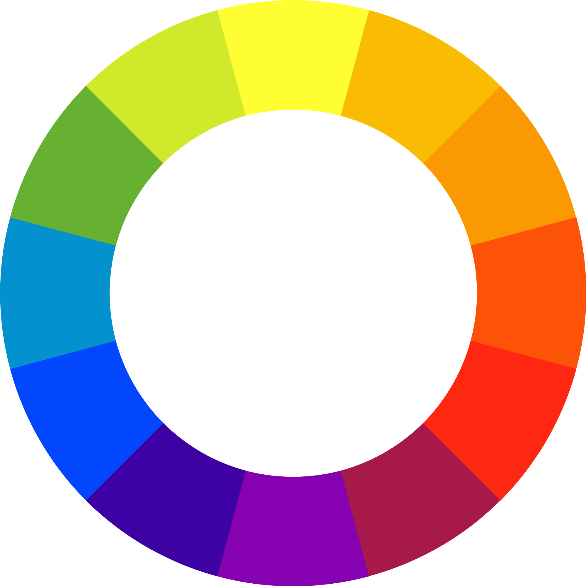

Colour Basics
The Colour Wheel
The 12-colour wheel is a common structuring of colour hues. The colours present on the 12-colour wheel can be broken into three categories: primary hues, secondary hues, and tertiary hues.
Primary Colours
Primary colours, as their name implies, are the most basic colours. These colours can be mixed to create other colours, but no other colours can be mixed to create primary colours. Note that these colours are evenly spaced along the colour wheel. This is true for all three colour categories.
The most common primary colours are red, yellow, and blue.
Note: In subtractive colour mixing, the primary colours are cyan, yellow and magenta.
Secondary Colours
Secondary colours are the next category of colour hues. Secondary colours are created when two primary colours are mixed.
Example: Red + Yellow = Orange
Secondary colours consist of orange, green, and violet(purple).
Tertiary Colours
Tertiary colours are created when primary colours are mixed with secondary colours. Unlike the other two categories, tertiary colours are not created by mixing two colours of the same colour category.
Example: Red + Orange = Red Orange
Secondary colours consist of red-orange, yellow-orange, yellow-green, blue-green, blue-purple, and red-purple.